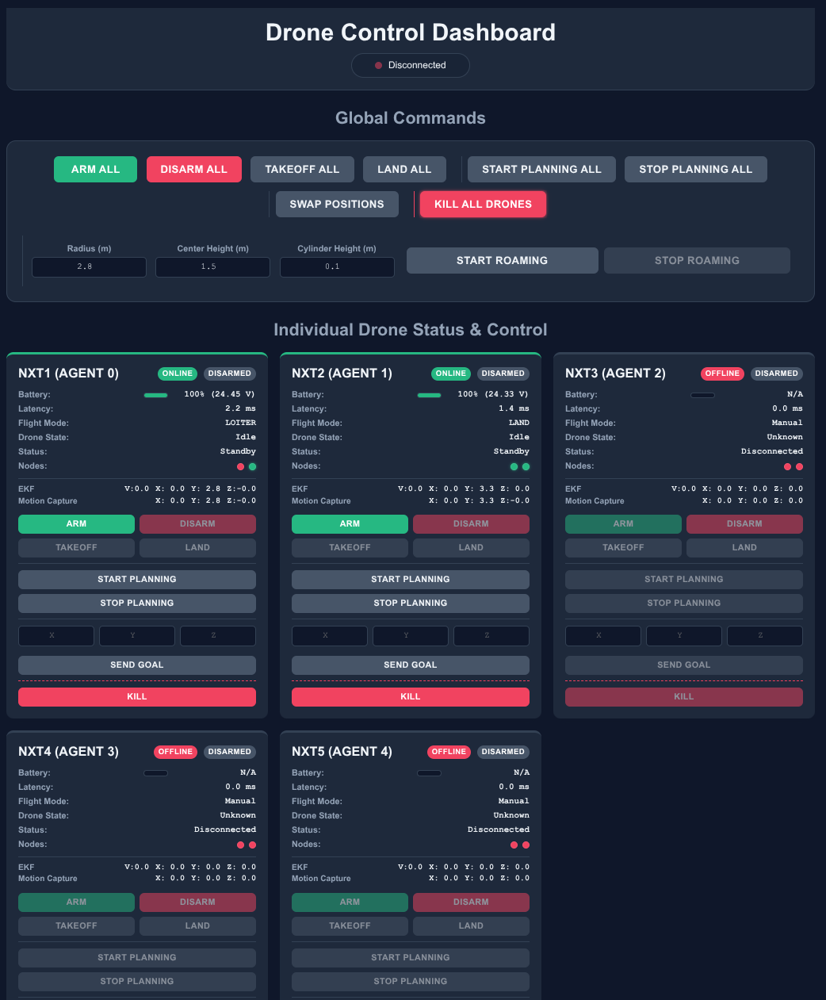

Flying
When connecting your Host PC via LAN to the router, make sure to turn off the WiFi of the Host PC to avoid interference with ROS2.
Pre-Flight Checklist
The takeoff altitude and other takeoff parameters are set in ros_packages/drone_state_manager_ros2/config/drone_state_manager_params.yml. You need to change it on all the drones before you run the preflight check. For this you can change it locally on your host, and then modify the drones_command.yml playbook to send the files to all drones (examples of sending files exist already in the playbook), and then run the playbook. Then you can proceed to the next steps.
- Check that the rotors are not obstructed by any cables, and all cables are well-connected
- Ensure that the
inventory.inifile has all of the hostnames of the drones under[drones]. This selects the drones that the operators are done on. - Run the pre-flight ansible:
cd /path/to/swarmnxtrepo/ansible && ansible-playbook -i inventory.ini drones_preflight.yml. This will start or check:- The
micro_xrceagent to get ROS2 access to PX4 outputs/inputs. - The autonomy stack (MPC, Planner, ...).
- Checks if chronyc is tracking.
- Checks camera clocks are synced and in focus (if
enable_camerasorenable_depthis set).
- The
- On the host PC open a web browser and go to
localhost:8080, where you will see a dashboard (picture below) for controlling the drones along with other important information (latency, battery level, ...). Check that the latency is stable between each drone and the ground station, and that the batteries are at least 80%. - Check that the EKF output is working well for each drone (only needed the first time you fly the drone):
ROS_DOMAIN_ID=1 ros2 launch foxglove_bridge foxglove_bridge_launch.xml(domain id = 1 to check for nxt1). Then launch Foxglove and subscribe to the ekf output and to the MoCap output and make sure they match as you move the drone around manually. - Use the dashboard to arm, take off, and land each drone individually before sending global commands.

Optional: Run an Update
You can run an update before runing the preflight check by going to the ansible/ directory and running the following command:
ansible-playbook -i inventory.ini drones_update.yml
This will update apt repositories, pull the latest version of ros packages (only those that changed), and build them.
Post-Flight Checklist
After the flight is done and you have disarmed the drones, you can run the post-flight script to copy the rosbags and logging files from the drones to the host PC ansible-playbook -i inventory.ini drones_postflight.yml. They will be in {host_base_path}/consolidated_logs. The topics recorded by the rosbags are defined in group_vas/all under drone_rosbag_topics.
To shutdown the drones before changing the batteries, you can run ansible-playbook -i inventory.ini drones_shutdown.yml.